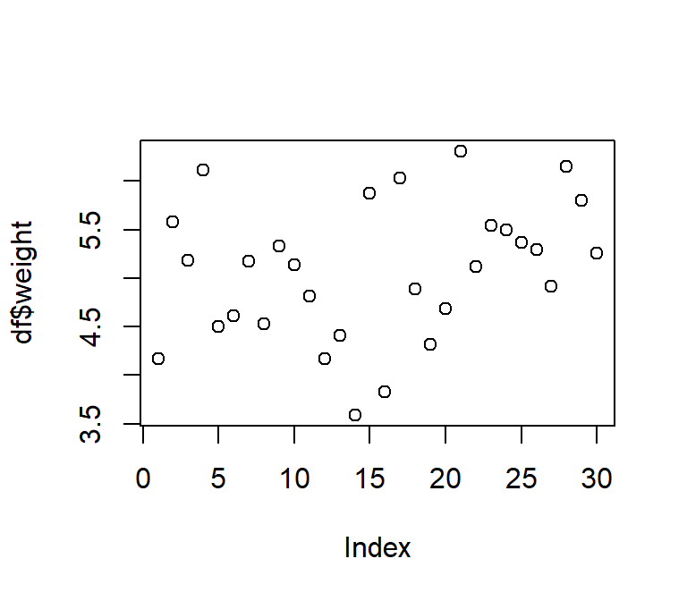
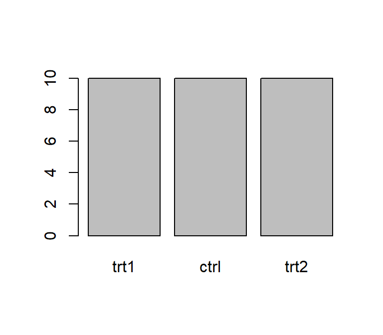
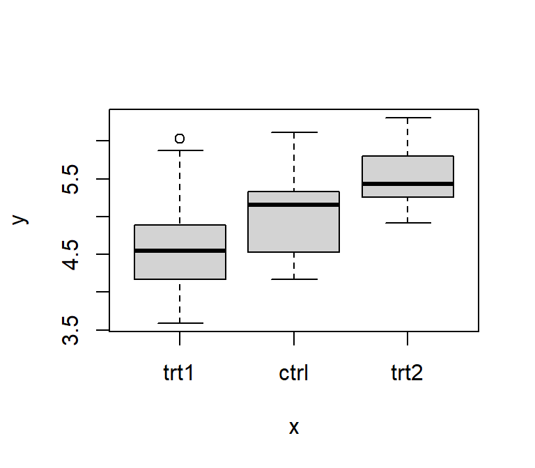

R Basics
This chapter is mostly aimed at people who are very new to R. However, people who do know R may still find useful insights from the sections where I emphasize how I use R. This is certainly not the best tutorial you’ll ever find, so if you want other tutorials,
- check out this curated list of R Tutorials here
Furthermore, this tutorial teaches R the way I use it, which means you can do (and may have done) almost everything I do here with other code/functions/approaches. “The way I use it” mostly refers to me using the tidyverse, which “is an opinionated collection of R packages designed for data science. All packages share an underlying design philosophy, grammar, and data structures” and has become quite popular over the last years. Here is a direct comparison of how to do things in R with base R and via the tidyverse.
Let’s go
You can use R like a basic calculator. It does not matter whether you put spaces in or not as shown here:
2+3## [1] 52 * 6## [1] 12Similar to what you may know from Excel, you can use functions like e.g. sqrt() to obtain the square root of a number:
sqrt(9)## [1] 3You can find out about what a function does by running it with a question mark before it: ?str().
Besides built-in functions, R also knows certain things like \(\pi\) or the alphabet, which are stored in the built-in constants named pi and letters:
pi## [1] 3.141593letters## [1] "a" "b" "c" "d" "e" "f" "g" "h" "i" "j" "k" "l" "m" "n" "o" "p" "q" "r" "s" "t" "u" "v" "w"
## [24] "x" "y" "z"Importantly, you may also define your own variables via = or <-:
x = 3
x## [1] 3x = 20
x## [1] 20a_long_variable_name <- 2 + 4
a_long_variable_name## [1] 6x + a_long_variable_name## [1] 26mytext <- "This is my text"
mytext## [1] "This is my text"Note that the variable x was overwritten - at first it was 3, but then it was 20. Also, as can be seen when the variable a_long_variable_name is defined, you may put more than just a simple number on the right side of the <- or =.
data types
As you can see above, R can deal with both numbers and text. We can check the data type via the typeof() function:
typeof(x)## [1] "double"typeof(mytext)## [1] "character"Here is a simplified overview over some of R’s data types you may see more often:
- Numbers
integer/int: whole number, e.g. 42, -1504numeric/num&double/dbl: real number, e.g. 3.14, 0.051795
- Text
character/chr: string values, e.g. “hello”, “Two words”
- Factor
factor/fct: categorical variable that stores both string and integer data values as “levels”, e.g. Control, Treatment
- TRUE/FALSE
logical/logi: logical value, either TRUE or FALSE
vectors
Instead of dealing with single numbers, we obviously want to deal with entire datasets. Before we get to an entire table with multiple rows and columns, the first step is to understand what a vector is in R: It is a sequence of elements that share the same data type. I often think about them as a single column in my dataset. Above, we actually already looked at a vector: letters is a built-in vector with 26 elements of the data type character. We could check this via the length() or str() functions:
length(letters)## [1] 26str(letters)## chr [1:26] "a" "b" "c" "d" "e" "f" "g" "h" "i" "j" "k" "l" "m" "n" "o" "p" "q" "r" "s" "t" ...Note how the built-in constant pi is not a vector, because it is a only a single number (a.k.a. a scalar).
str(pi)## num 3.14length(pi)## [1] 1If you want to create your own vector from scratch, you must put all the elements together in the c() function and separate them with commas:
mynumbers <- c(1, 4, 9, 12, 12, 12, 16)
mynumbers## [1] 1 4 9 12 12 12 16mywords <- c("Hakuna", "Matata", "Simba")
mywords## [1] "Hakuna" "Matata" "Simba"Interestingly, we can still apply the sqrt() function we used above to a vector with numbers and it will simply take the square-root of every element:
sqrt(mynumbers)## [1] 1.000000 2.000000 3.000000 3.464102 3.464102 3.464102 4.000000However, there are also functions like mean() which return the mean of all numbers in a vector as a single output element:
mean(mynumbers)## [1] 9.428571function arguments
So far, the functions we used had in common that they required only one input. The really good stuff in R happens with more complex functions which need multiple inputs. Let us use seq() as an example, which seems simple enough, because it generates a sequence of numbers:
seq(1, 10)## [1] 1 2 3 4 5 6 7 8 9 10As you can see, putting in 1 and 10 separated by a comma generates a numeric vector with numbers from 1 to 10. However, I would like you to fully understand what is going on here, because it will help a lot with more complex functions.
See, we could switch the numbers and the function will work as expected:
seq(10, 1)## [1] 10 9 8 7 6 5 4 3 2 1So this means that the first input is always the starting point and the second one is always the end point of the sequence, right? Well, yes by default, but you can have it your way if you specifically use the names of the arguments.
Looking at ?seq() it says seq(from = 1, to = 1, by = ...) so this seq(10, 1) is more explicitly this: seq(from = 1, to = 10, by = 1). Here is proof:
seq(from = 1, to = 10, by = 1)## [1] 1 2 3 4 5 6 7 8 9 10Again, if you do not write out the arguments like this, it will simply assume the default order: The first number supplied is from = the second is to = and the third is by =. However, if we write out the arguments, we can use any order we like:
seq(1, 9, 2)## [1] 1 3 5 7 9seq(from = 1, to = 9, by = 2)## [1] 1 3 5 7 9seq(from = 1, by = 2, to = 9)## [1] 1 3 5 7 9seq(1, 2, 9)## [1] 1In short: If you understand why the first three lines of the code above produce the same result, but the last one does not, you are good to go!
R packages
Any function is always part of an R package.
base R
After installing R there are many functions etc. you can use right away - which is what we did above. For example, when running ?mean, the help page will tell you that this function is part of the {base} package. As the name suggests, this package is built-in and its functions are ready to use the moment you have installed R. You can verify this by going to the “Packages” tab in RStudio - you will find the base package and it will have a checked box next to it.
loading packages
When looking at the “Packages” tab in RStudio you may notice that some packages are listed, but do not have a check mark in the box next to them. These are packages that are installed, but not loaded. When a package is not loaded, its functions cannot be used. In order to load a package, the default command is library(package_name). This command must be run once every time you open a new R session.
installing additional packages
R really shines because of the ability to install additional packages from external sources. Basically, anyone can create a function, put it in a package and make it available online. Some packages are very sophisticated and popular - e.g. the package {ggplot2}, which is not built-in, has been downloaded 75 million times. In order to install a package, the default command is install.packages(package_name). Alternatively, you can also click on the “Install” button in the top left of the “Packages” tab and type in the package_name there. A package only needs to be installed once, but in order to use it, it must be loaded every time you open a new R session as described above.
Here is a curated list of R packages and tools for different areas.
p_load() vs. library()

Above, I mentioned how to install and load R packages the standard way. However, over the years I switched to using the function p_load() of the {pacman} package instead of library() and install.packages(). The reason is simple: Usually R-scripts start with multiple lines of library() statements that load the necessary packages. However, when this code is run on a different computer, the user may not have all these packages installed and will therefore get an error message. This can be avoided by using the p_load(), because it
- loads all packages that are installed and
- installs and loads all packages that are not installed.
Obviously, {pacman} itself must first be installed (the standard way). Moreover, you may now think that in order to use p_load() we do need a single library(pacman) first. However, we can avoid this by writing pacman::p_load() instead. Simply put, writing package_name::function_name() makes sure that this explicit function from this explicit package is being used. Additionally, you do not need to spearately to load the respective package if you write it like this. Thus, we now arrived at the way I handle packages at the beginning of all my R-scripts:
pacman::p_load(
package_name_1,
package_name_2,
package_name_3
)loading the tidyverse
In this
tables
Finally, we can talk about data tables with rows and columns. In terms of R, I like to think of a table as multiple vectors side by side, so that each column is a vector.
data.frame
The standard format for a data table is called data.frame. Here is an example table that built-in, just like pi is - it is called PlantGrowth:
PlantGrowth## weight group
## 1 4.17 ctrl
## 2 5.58 ctrl
## 3 5.18 ctrl
## 4 6.11 ctrl
## 5 4.50 ctrl
## 6 4.61 ctrl
## 7 5.17 ctrl
## 8 4.53 ctrl
## 9 5.33 ctrl
## 10 5.14 ctrl
## 11 4.81 trt1
## 12 4.17 trt1
## 13 4.41 trt1
## 14 3.59 trt1
## 15 5.87 trt1
## 16 3.83 trt1
## 17 6.03 trt1
## 18 4.89 trt1
## 19 4.32 trt1
## 20 4.69 trt1
## 21 6.31 trt2
## 22 5.12 trt2
## 23 5.54 trt2
## 24 5.50 trt2
## 25 5.37 trt2
## 26 5.29 trt2
## 27 4.92 trt2
## 28 6.15 trt2
## 29 5.80 trt2
## 30 5.26 trt2Let us create a copy of this table called df and then use some helpful functions to get a first impression of this data:
df <- PlantGrowth
str(df)## 'data.frame': 30 obs. of 2 variables:
## $ weight: num 4.17 5.58 5.18 6.11 4.5 4.61 5.17 4.53 5.33 5.14 ...
## $ group : Factor w/ 3 levels "trt1","ctrl",..: 2 2 2 2 2 2 2 2 2 2 ...summary(df)## weight group
## Min. :3.590 trt1:10
## 1st Qu.:4.550 ctrl:10
## Median :5.155 trt2:10
## Mean :5.073
## 3rd Qu.:5.530
## Max. :6.310We can see that this dataset has 30 observations (=rows) and 2 variables (=columns) and is of the type “data.frame”. Furthermore, the first variable is called weight and contains numeric values for which we get some measures of central tendency like the minimum, maximum, mean and median. The second variable is called group and is of the type factor containing a total of three different levels, which each appear 10 times.
If you want to extract/use values of only one column of such a data.frame, you write the name of the data.frame, then a $ and finally the name of the respective column. It returns the values of that column as vectors:
df$weight## [1] 4.17 5.58 5.18 6.11 4.50 4.61 5.17 4.53 5.33 5.14 4.81 4.17 4.41 3.59 5.87 3.83 6.03 4.89
## [19] 4.32 4.69 6.31 5.12 5.54 5.50 5.37 5.29 4.92 6.15 5.80 5.26df$group## [1] ctrl ctrl ctrl ctrl ctrl ctrl ctrl ctrl ctrl ctrl trt1 trt1 trt1 trt1 trt1 trt1 trt1 trt1
## [19] trt1 trt1 trt2 trt2 trt2 trt2 trt2 trt2 trt2 trt2 trt2 trt2
## Levels: trt1 ctrl trt2tibble vs. data.frame

One major aspect of the above-mentioned tidyverse I am making use of is formatting tables as tibbles instead of data.frames. A tibble “is a modern reimagining of the data.frame, keeping what time has proven to be effective, and throwing out what is not.” It is super simple to convert a data.frame into a tibble, but you must have the tidyverse R package {tibble} installed and loaded.
library(tibble)
tbl <- as_tibble(df)
tbl## # A tibble: 30 x 2
## weight group
## <dbl> <fct>
## 1 4.17 ctrl
## 2 5.58 ctrl
## 3 5.18 ctrl
## 4 6.11 ctrl
## 5 4.5 ctrl
## 6 4.61 ctrl
## 7 5.17 ctrl
## 8 4.53 ctrl
## 9 5.33 ctrl
## 10 5.14 ctrl
## # ... with 20 more rowsOf course, the data itself does not change - only its format in R. If you compare the output we get from printing the tibble-formatted data tbl here to that of printing the data.frame-formatted data df above, I would like to point out some things I find extremely convenient when looking at tibble-formatted data:
- There is an extra first line telling us about the number of rows and columns.
- There is an extra line below the column names telling us about the data type of each column.
- Only the first ten rows of data are printed and a “… with 20 more rows” is added below.
- It can’t be seen here, but this would analogously happen if there were too many columns.
- Missing values
NAand negative numbers are printed in red.
Finally, note that in its heart, a tibble is still a data.frame and in most cases you can do everything with a tibble that you can do with a data.frame. Therefore, I almost always format my datasets as tibbles.
quick plots
Note that R has a plot() function which is good at getting some first data visualizations with very little code. It guesses what type of plot you would like to see via the data type of the respective data to be plotted:
plot(df$weight) # scatter plot of values in the order they appear
plot(df$group) # bar plot of frequency of each level
plot(x = df$group, y = df$weight) # boxplot for values of each level
However, I really just use plot() to get a quick first glance at data. In order to get professional visualizations I always use {ggplot2}, which is also a tidyverse R package, and its extensions.

the %>% pipe
library(dplyr) # make %>% available 

So far, we have only used functions individually. Yet, in real life you will often find yourself having to combine multiple functions. As a fictional example, let’s say that from the PlantGrowth data, we want to extract a sorted vector of the square root of all weight-values that belong to the ctrl group. Just like in MS Excel, it is possible to write functions inside of functions so that this code would do the job:
sort(round(sqrt(pull(filter(PlantGrowth, group == "ctrl"), weight)), 1))## [1] 2.0 2.1 2.1 2.1 2.3 2.3 2.3 2.3 2.4 2.5Here is what is going on:
filter(data.frame, condition)is used to subset the dataPlantGrowthwith the condition thatgroup == "ctrl".pull(data.frame, column_name)extracts the weight column (just like$weightwould)sqrt(values)computes the square root of all valuesround(values, digits)round to certain digits after the commasort(values)sorts the values
This works, but you have to read this code from the inside out. Especially functions that have multiple arguments separated by commas like filter(), pull() and `round()`` in this example, make it even less intuitive to read and more prone to typos.
One way of improving the readability is to run the functions separately and create new objects for every intermediate step:
a <- filter(PlantGrowth, group == "ctrl")
b <- pull(a, weight)
c <- sqrt(b)
d <- round(c, 1)
sort(d)## [1] 2.0 2.1 2.1 2.1 2.3 2.3 2.3 2.3 2.4 2.5In my opinion, however, using the %>% operator is an even better way of dealing with such cases. It allows you to write functions “from left to right” and thus in the order they are executed and the way you think about them.
PlantGrowth %>%
filter(group == "ctrl") %>%
pull(weight) %>%
sqrt() %>%
round(1) %>%
sort()## [1] 2.0 2.1 2.1 2.1 2.3 2.3 2.3 2.3 2.4 2.5You can think about it like this: Something (in this case the PlantGrowth data.frame) goes into the pipe and is directed to the next function filter(). By default, this function takes what came out of the pipe and puts it as its first argument. This happens with every pipe. You’ll notice that all the functions who required two arguments above, now only need one argument, i.e. the additional argument, because the main argument stating which data is to be used is by default simply what came out of the previous pipe. Accordingly, the functions sqrt() and sort() appear empty, because they only need one piece of information and that is which data they should work with. Note also that you can easily highlight only some of the lines up until one of the pipes to see the intermediate results.
The pipe operator originally comes from {magrittr}, but is also loaded when loading the tidyverse R package {dplyr}, which we did above. Basically, the functions from {dplyr} (e.g. filter(), pull(), mutate()) work really well together with the pipe. The hotkey for writing %>% in RStudio is CTRL+SHIFT+M.
keyboard shortcuts
Here are shortcuts I actually use regularly in RStudio:
| Shortcut | Description |
|---|---|
| CTRL+ENTER | Run selected lines of code |
| CTRL+SHIFT+M | Insert %>% |
| CTRL+SHIFT+R | Insert code section header |
| CTRL+LEFT/RIGHT | Jump to Word |
| CTRL+SHIFT+LEFT/RIGHT | Select Word |
| ALT+LEFT/RIGHT | Jump to Line Start/End |
| ALT+SHIFT+LEFT/RIGHT | Select to Line Start/End |
| CTRL+A | Highlight everything (to run the entire code) |
| CTRL+Z | Undo |
Please feel free to contact me about any of this!
schmidtpaul1989@outlook.com